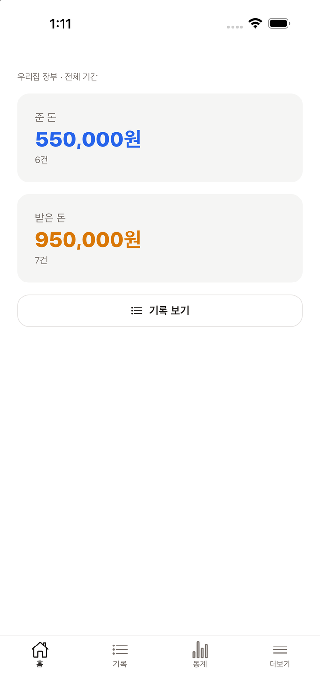
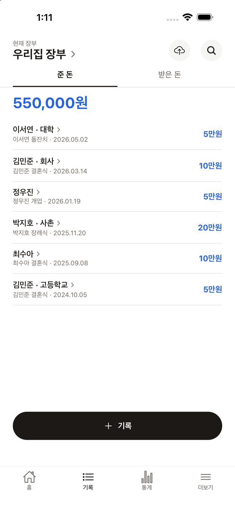
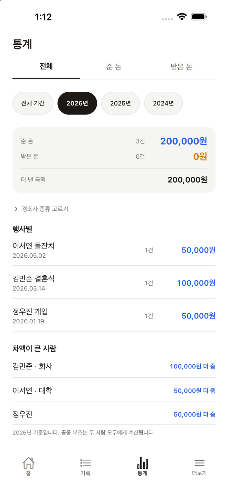

경조사로 주고받은 마음을
사람 단위로 기록합니다.
예시 화면입니다



화면의 이름과 금액은 모두 가상입니다.
한 사람에 대해 내가 낸 돈과 그가 낸 돈이 한 화면에 모입니다. 다음에 얼마를 낼지 고민할 때 그 화면 하나면 됩니다.
식장 가는 길에 이름, 날짜, 종류, 금액만 넣으면 끝입니다. 같은 이름이 있으면 그 사람으로 자동 연결됩니다.
결혼식 명부를 엑셀로 정리해 두셨다면 파일 하나로 통째로 넣습니다. 파일은 기기 안에서만 읽습니다.
초대 코드 하나로 배우자를 부릅니다. 두 사람이 각자 기록해도 하나의 장부에 모입니다.
같은 이름이 둘이면 회사, 고등학교 같은 구분 말을 붙여 구별합니다.
광고도 분석 도구도 없습니다. 계정 삭제는 앱 안에서 즉시 되고, 삭제하면 기록도 함께 사라집니다.
앱에서 넣은 기록이 웹에서 그대로 보입니다. 식장에서는 폰으로 적고, 정리는 PC에서 하세요. 웹에서는 장부 전체를 엑셀에서 열리는 파일로 내려받을 수도 있습니다.